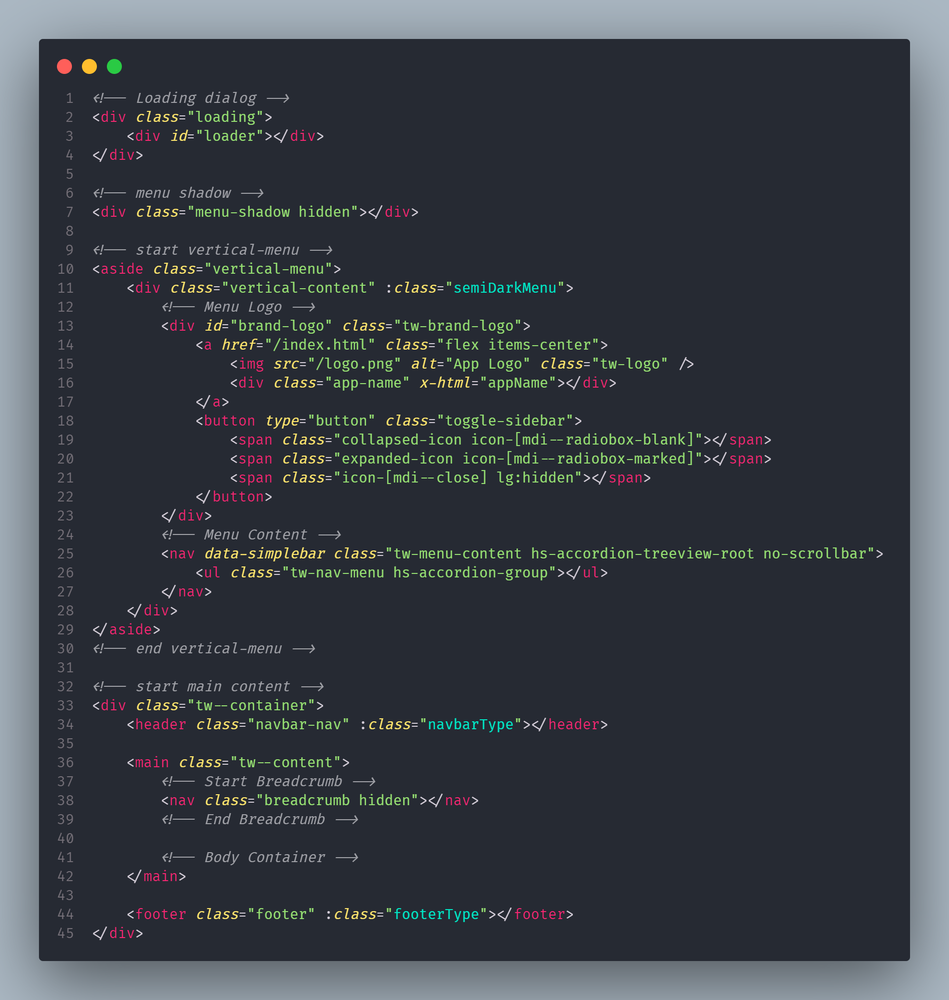

Created: 25/10/2024
By: DraftScripts
Email: kzamanbn@gmail.com
Thank you for purchasing my theme. If you have any questions that are beyond the scope of this help file, please feel free to email via my user page contact form here. Thanks so much!
This theme is a fixed layout with two columns. All of the information within the main content area is nested within a div with an id of "primaryContent". The sidebar's (column #2) content is within a div with an id of "secondaryContent". The general template structure is the same throughout the template. Here is the general structure.
If you would like to edit the color, font, or style of any elements in one of these columns, you would do the following:
// tailwind.config.js
primary: {
...primary,
DEFAULT: primary[500],
},
If you find that your new style is not overriding, it is most likely because of a specificity problem. Scroll down in your CSS file and make sure that there isn't a similar style that has more weight.
So, to ensure that your new styles are applied, make sure that they carry enough "weight" and that there isn't a style lower in the CSS file that is being applied after yours.
I'm using two CSS files in this theme. The first one is a generic reset file. Many browser interpret the default behavior of html elements differently. By using a general reset CSS file, we can work round this. This file also contains some general styling, such as anchor tag colors, font-sizes, etc. Keep in mind, that these values might be overridden somewhere else in the file.
The second file contains all of the specific stylings for the page. The file is separated into sections using:
/** assets/css/app.css */
@import url('https://fonts.googleapis.com/css2?family=Inter:wght@200;300;400;500;600;700;900&display=swap');
@import './core/base.css';
@import './common-ui.css';
@import './plugins.css';
@import './core/navbar.css';
@import './core/horizontal-menu.css';
@import './core/vertical-menu.css';
@import './core/footer.css';
@import './core/accordion.css';
@import './core/badges.css';
@import './core/cards.css';
@import './core/buttons.css';
@import './core/forms.css';
@import './core/alerts.css';
@import './core/breadcrumb.css';
@import './core/dropdown.css';
@import './core/tables.css';
@import './core/drawer.css';
@import './core/modal.css';
@import './core/login.css';
@import './core/calenders.css';
@import './core/tooltip.css';
@import './core/datatable.css';
@import './core/file-upload.css';
@import './features/dashboard.css';
@import './features/chat-apps.css';
@import './features/mailbox.css';
etc, etc.
The first section is the "Reset" section. This is set to eliminate the default margin, padding and font-size of the elements. This makes the elements easier to style. The second section is the "General" section. This is where most of the styling is set for the general items. The third section is the "Specific" section. This is where the specific items are styled. The fourth section is the "Plugins" section. This is where the styling for the plugins are set. The fifth section is the "Media Queries" section. This is where the responsive design is set. The last section is the "Print" section. This is where the print styles are set.
The CSS is structured in a way that it is easy to find and edit the styles you need. Here is a list of the CSS files and their purpose:
This theme imports three Javascript files.
/** * Core Dependencies */ import 'preline/preline'; import 'simplebar'; window.Alpine = Alpine; Alpine.plugin(persist); // You will need a ResizeObserver polyfill for browsers that don't support it! (iOS Safari, Edge, ...) import ResizeObserver from 'resize-observer-polyfill'; window.ResizeObserver = ResizeObserver; // tippy.js for tooltip import tippy from 'tippy.js'; window.tippy = tippy;
I've used the following images, icons or other files as listed.
Once again, thank you so much for purchasing this theme. As I said at the beginning, I'd be glad to help you if you have any questions relating to this theme. No guarantees, but I'll do my best to assist. If you have a more general question relating to the themes on ThemeForest, you might consider visiting the forums and asking your question in the "Item Discussion" section.
DraftScripts